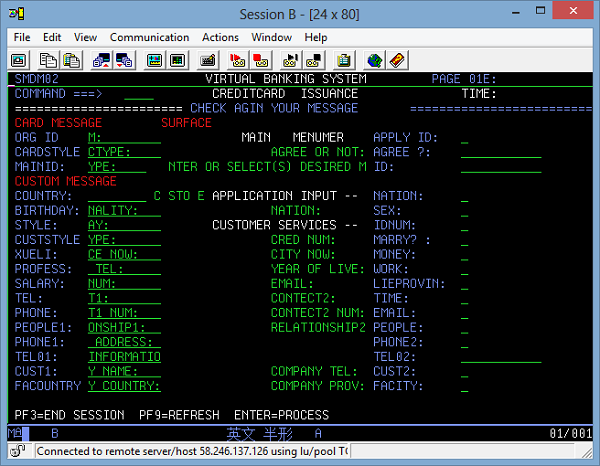
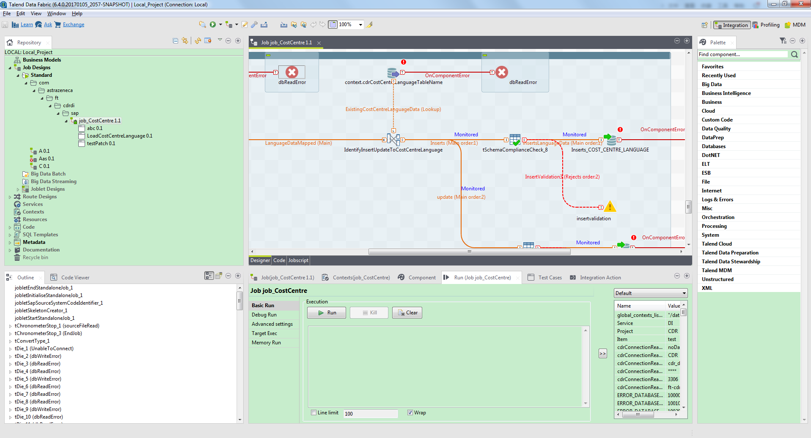
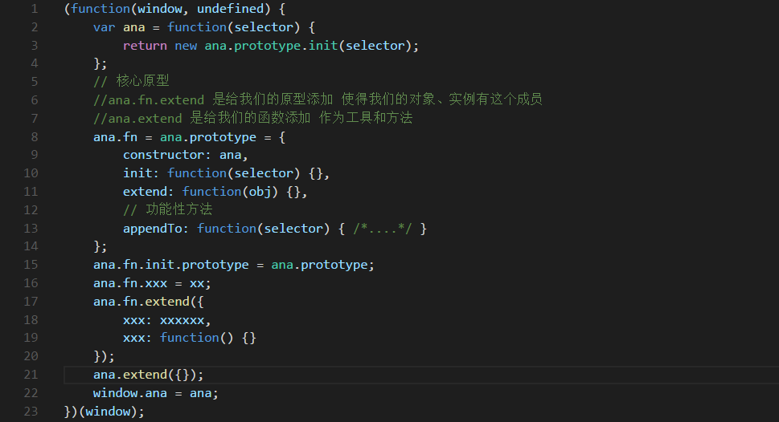

-
- Basic info. 基本信息
- 个人信息: 郭亮 / 男 / 1992.06
- 毕业院校: 太原理工大学
- 专业: 本科 软件工程
- 工作经验: 2.5年
- 政治面貌: 中共党员
- 英语水平: CET-4
- GitHub: www.github.com/RookieDay
-
- Experience. 项目与工作经验
大连花旗金融(2014.10-2015.5)
-
花旗银行信用卡项目 源代码
在花旗银行信用卡ECMS核心开发部门，在IBM大型机MainFrame ZOS390环境上，熟练采用Cobol、CICS、JCL编程语言进行信用卡业务的开发和维护。 另外，业余使用以上技术和组长协作开发完成功能较为完善的从Java平台到大机环境的信用卡信息管理系统的设计开发，并成功推广面向学校作为大机学习的进阶案例。

北京拓蓝科技(2015.5-至今)
-
Talend Open Studio 地址
主要负责公司产品Talend Open Data Studio的新功能开发和旧版本产品维护，熟练使用Eclipse debug技巧对产品bug进行修复、新功能开发，涉及技术Java、Eclipse RCP插件开发。 期间完成了产品过滤组件tmap中对数据的按需过滤和输入输出数据处理的在连接功能，完成了对集成的Big data部分，改善对运行特殊Hortonworks MapR Job需要额外配置信息的功能，解决产品跨平台GUI显示问题等。

中泰证券股份有限公司(2017.3-至今)
-
产品设计、微信公众号运营
主要负责公司微信公众号的运营，其中包括日常内容的收集，推送/转发内容的编辑、排版(秀米/135编辑器)，对微信公众号内容实时调整和更新。熟练使用AU处理音频，快速设计宣传海报以及活动H5邀请函(易企秀/maka)。
个人项目
-
模拟jQuery封装一个自己的框架ana.js 源代码 设计
此框架简单模拟实现类似jQ的功能，附图为核心设计部分。ana.fn.extend给我们的原型添加，使得我们的对象实例有这个成员，ana.extend给我们的函数添加，作为工具和方法。对应模块进行封装，其中完成的模块有选择器模块、DOM操作模块、事件模块、样式属性操作模块、动画操作模块，虽然未能考虑到全部case，但是已经基本实现大部分模块的功能，并且测试成功。
 -
微信小程序-豆瓣电影 & 模仿Cnode社区 豆瓣电影 Cnode社区
在今年1月9日微信小程序正式上线后，参考微信小程序官方简易教程、框架、组件、API等快速开始小程序demo开发，使用Js、WXML和WXSS，调用接口，获取数据，页面设计呈现，简单实现豆瓣电影，并模块化封装开发以下功能模块：top250 + 即将上映 + 正在热映 + 电影搜索，高仿Cnode社区：主界面 + 精华 + 分享 + 问答等部分模块的开发。

RookieDay的简历
"Talk is cheap, Show me the code"
我是一个充满活力、对前端由衷热爱、善于发现问题的前端工程师，每日持续coding，乐在其中。
我目前正在努力寻找前端工程师的岗位，虽然前端变化更新特别快，但我想我会一路坚持下去，因为全栈才是我的目标。
在线简历: RookieDay